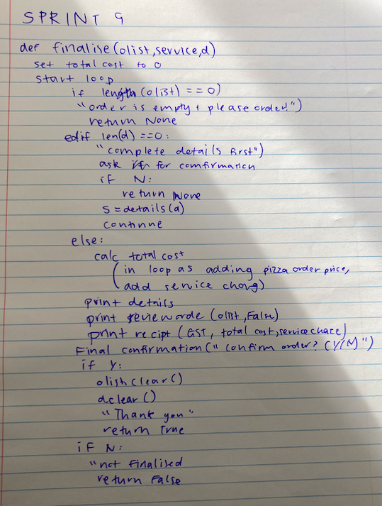
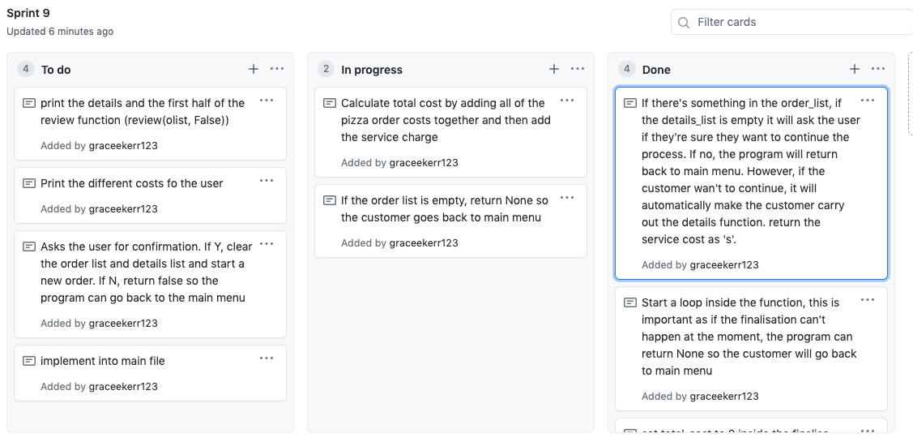
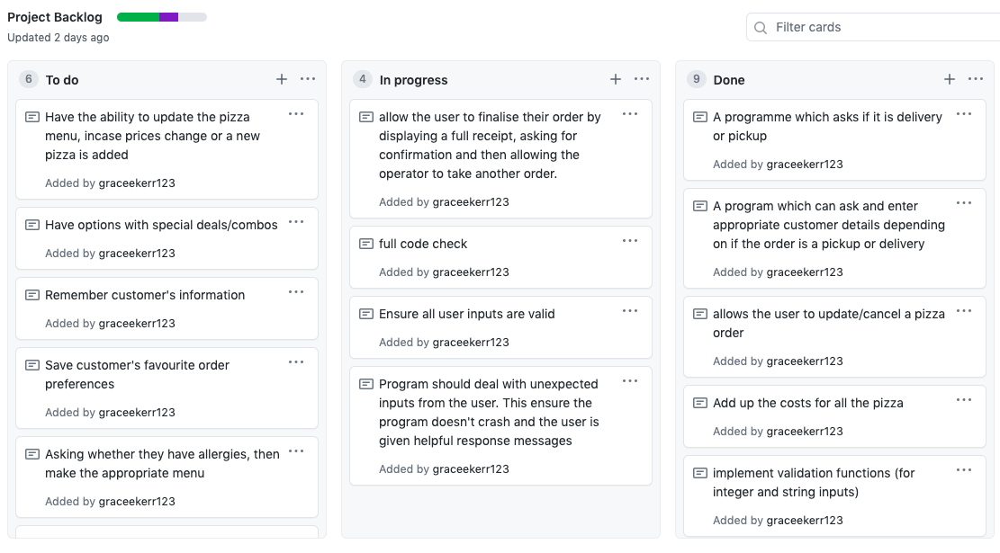
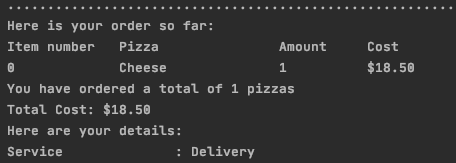
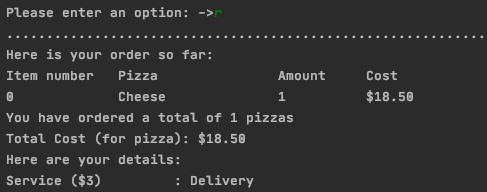
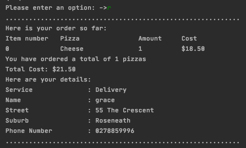
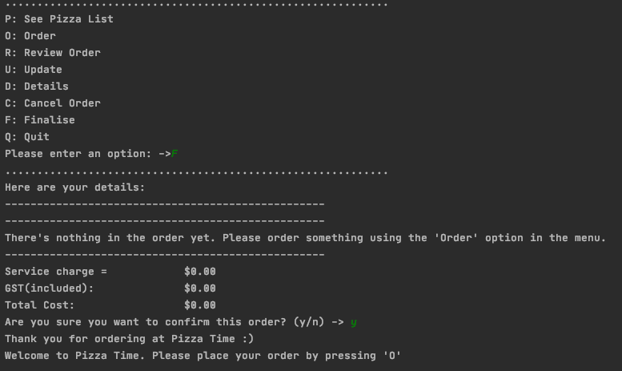

Aim:
To bulid a finalise the order function which will ask user to confirm that they want to complete their order and loop until it's certain at least one pizza and details have been inputed.
Planning
Sprint Board
Backlog at the moment
Problems:
The problem that I found last sprint about the total cost not updating in the review function isn't fixed as it quite complicated. At first, I decided to change the wording, so it makes more sense to the user. I though this was the best use of my time as i believed this would be quiet time consuming. At the end of the sprint I realised this is actually a lot easier than I though, and I actually fixed it. To fix it I just had to make sure I added the argument s (service_charge) to the review function (+ the update function, as I called the review function there as well) and then add s onto the total cost just after the loop used to add up all the pizza order costs up.
Before:
After: (the first time)
Final After: Problem Solved
As you can see, the total cost is now $21.50 as it added the $3 delivery cost.
Reflection:
Problem's I encountered:
One problem I had that the program would let the user try and finalise their order even when they had no order. This is very bad as although there was no crash, it was messy and not even possible. I had to make sure that if no order had been made that they couldn't finalise the order. As if no order had been made (there would be no recipt or no order to review). I made a conditional statement which is at the beginnign of the loop in the finalise function, which makes the user return to main menu. While doing this I made sure that if the user hadn't filled out their details, that they would have to do that too. If there's something in the order_list, and if the details_list is empty too - it will ask the user if they're sure they want to continue the process. If no, the program will return back to main menu. However, if the customer wan't to continue, it will automatically make the customer carry out the details function. It will also return the service cost as 's'.
Final Reflection
I thought that it was finally time to do a finalise the order function. The basis of this feature was to create another option on the menu so the customer could access all the information they have given the program and also add any information they haven't done.
It is clear to me that I have fufilled out all the critea necessary for this project. However, I thought it would be useful to fix a hard problem as a extenstion. This made me decide that next sprint I will work on fixing the program so there can't be any duplicates in the order, something I found earlier in sprint 4 and while Nia tested my program.